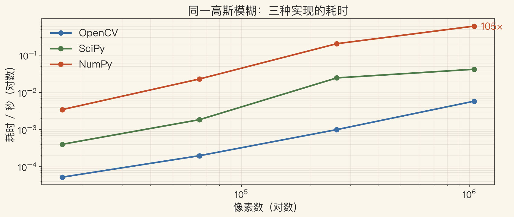
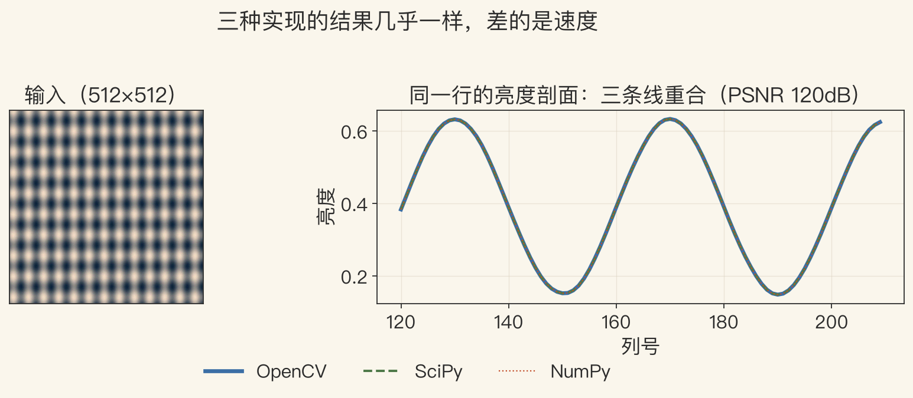
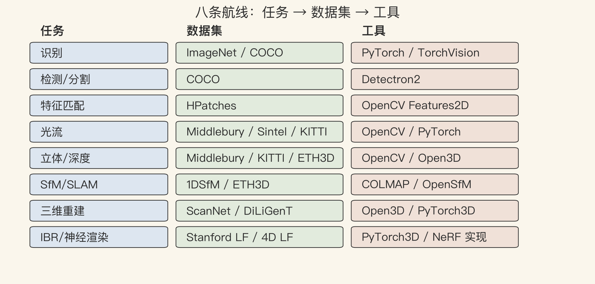

最后一集 · 资源索引
学完之后，去哪找东西
- 这一集不教新公式。
- 只给三样：数据集、工具、下一步路线。
- 把它当索引，不必一次记住。
- 先看目录，再决定跳哪一段。
依据：原书附录 C，p.954 起
三样东西
数据集：去哪找
工具：用什么跑
路线：下一步怎么走
原书第 954 页 · 选数据集
数据集选错，后面调参都白费
- 任务像不像：不像就没有意义。
- 标注够不够：不够就没法算分。
- 有没有排行榜：有榜单才知道位置。
- 许可证和隐私：商用前看清条款。
依据：原书 p.954
原书第 954 页 · 常用数据集
先按任务找，不要一个数据集打天下
- 识别：ImageNet、COCO。
- 光流：Middlebury、Sintel、KITTI。
- 立体：Middlebury、ETH3D。
- 三维：ScanNet、DiLiGenT；分割：ADE20K、Cityscapes。
依据：原书 p.954
按任务索引
识别/分割
光流/立体
三维/自动驾驶
旧数据集：附录 C.1/VisionBib
原书第 960 页 · 泛化
训练集=测试集，分数要打折
- 很多算法在 KITTI 上训练又在 KITTI 上测试。
- 换一个数据集就掉点。
- 先看训练集/测试集是不是同一个。
- 更要看跨数据集、跨场景的表现。
依据：原书 p.960
看论文先问
训练/测试是否同源？
换数据集掉多少？
domain adaptation 是正经方向
图1 · 工具速度
同一操作，差两个数量级
- 128–1024 合成图，9×9 高斯核。
- 1024²：OpenCV 0.006s，SciPy 0.042s，NumPy 0.61s。
- 相对 NumPy：OpenCV 快约 105 倍，SciPy 约 15 倍。
- 单机、单操作、合成图；只看趋势，不是通用 benchmark。
依据：程序生成实验

三种实现的高斯模糊耗时 vs 像素数｜程序生成，未用教材原图
原书第 961–962 页 · 工具
经典看 OpenCV，新论文看 Papers with Code
- OpenCV：2500 多个优化算法，C++/Python/Java/MATLAB。
- Papers with Code：汇总最新论文和实现。
- 原型用 Python，部署再换 C++/GPU。
- OpenCV 的 Python 接口底层是 C++，别逐像素循环。
依据：原书 pp.961–962
工具选择
经典算法：OpenCV
新论文：Papers with Code
原型：Python；部署：C++/GPU
图2 · 数值一致性
结果几乎一样，差的是速度
- 同一行亮度剖面，三条线完全重合。
- PSNR 约 120 分贝。
- PSNR 120 说明逐像素几乎一样，与画质无关。
- 选库先确认数值一致，再比速度。
依据：程序生成实验

同一行亮度剖面：三条线重合（PSNR 120dB）｜程序生成，未用教材原图
原书第 962–964 页 · 数组与框架
先把 NumPy 用顺，再上框架
- NumPy：多维数组、广播、索引、矩阵乘法。
- PyTorch/TensorFlow：GPU 数值计算 + 自动求导。
- 先学 NumPy，再学框架，顺序别反。
- GPU 不是万能，小图/小模型传输开销可能更大。
依据：原书 pp.962–964
学习顺序
NumPy：数组思维
框架：自动求导 + GPU
别把框架只当加速库
图3 · 任务→数据集→工具
八条路线，一张索引
- 识别：ImageNet/COCO + PyTorch。
- 检测分割：COCO + Detectron2。
- 特征：HPatches + OpenCV；SfM：1DSfM/ETH3D + COLMAP。
- 三维：ScanNet/DiLiGenT + Open3D。
依据：本集索引；原书 pp.954–964

八条航线：任务→数据集→工具｜程序生成，未用教材原图
原书第 964 页 · 免费算力
没有显卡，先用 Colab 跑通
- Colab：免费 GPU + Jupyter，适合课程作业。
- Kaggle：在流行数据集上比拼模型。
- 想复现论文，先看 Papers with Code 有没有代码。
- 免费额度有限，长期训练要准备本地或云 GPU。
依据：原书 p.964
按阶段选
学习：Colab
练手：Kaggle
复现：Papers with Code
长期：本地/云 GPU
原书第 970 页 · 下一步
三条线：补基础、追前沿、做项目
- 补基础：跟一门大学课程。
- 追前沿：看会议和 Papers with Code。
- 做项目：选一个数据集从头跑到尾。
- 先复现基线，再改一个模块，不要一上来造新算法。
依据：原书 p.970
全课回顾 · 最后一个问题
下一步，从你的问题开始
- 从像素、成像、处理，到学习、识别、运动、三维、渲染。
- 算法会过时，工具会换，思路不会过时。
- 选一个你真关心的问题，从一张图/一个数据集/一个基线开始。
- 你想用视觉解决什么？
依据：全课回顾